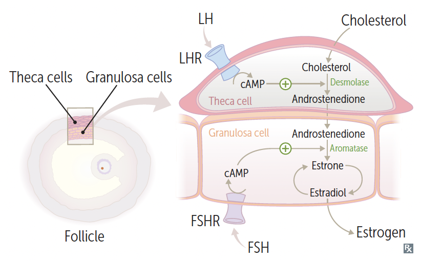

Oogenesis begins in utero with the differentiation of the oogonium into primary oocytes. This process is completed by birth or shortly thereafter (3 months). The primary oocytes are arrested in prophase Ⅰ of meiosis for years until the female reaches puberty and begin menustration. For this reason, a woman is said to have as many eggs as she is born with.
Beginning in puberty and lasting until menopause, each month, a female will ovulate an egg (or more in some cases). During the pre-ovulation phase of the menstrual cycle (follicular phase), the primary oocyte (or follicle) develops and grows until it reaches maturity and is released by the ovary into the fallopian tubes. After ovulation, the primary oocyte continues through meiosis, becoming a secondary oocyte, and arrests at metaphase Ⅱ until fertilization.
Upon fertilization (contact with spermatozoon), the secondary oocyte completes meiosis Ⅱ and becomes an ootid (immature ovum). By this point, the spermatozoon has disintegrated completely leaving only the nucleus and its content (now called the male pronucleus). The nucleus of this ootid is the female pronucleus, and their fusion at the center of the cell forms the embryo.* If fertilization does not occur within 1 day after the secondary oocyte is formed, the oocyte will degenerate.
*need verificationThe menustral cycle is regulated by hypothalamic-pituitary-ovarian (HPO) axis. Pulsatile GnRH from the hypothalamus stimulates the release of FSH and LH from the posterior pituitary. These latter hormones are the primary drivers of follicular development and ovulation (the ovarian cycle). The hormones produced by the products of the ovarian cycle (estrogen and progesterone) in turn regulate the development and degeneration of the endometrium for implantation (uterine cycle). The ovarian cyle and uterine cycle combine forms what is called the menstrual cycle.
The ovarian cycle consists of a follicular phase which starts at the beginning of the cycle until ovulation, and a luteal phase lasting 14 days after ovulation. During the follicular phase, the follicles, functional units of the ovary containing a primary oocyte and its supporting cells (granulosa cells and theca cells), grow, develop, and mature. This phase's duration is variable depending on the speed of the follicular development to be ready for ovulation.
The follicular phase begins with primordial follicles growing and developing into an unilaminar primary follicle. The difference being the granulosa cells of the unilaminar primary follicle is cuboidal in shape. The unilaminar primary follicle continues to grow and develop, becoming a multilaminar secondary follicle gaining additional layers of granulosa cells and a new cell type called theca cells. The theca cell layers surround the granulosa cells. At this point, a single secondary follicle is selected to mature further under the influence of FSH and LH to become the antral (Graffian) follicle. The remaining secondary follicles degenerate through a process called follicular atresia.
The granulosa cells express FSH-R, and the theca cells express LH-R. In response to LH, the theca cells produces androstenedione from cholesterol, which is secreted into the inner granulosa cell layers. The granulosa cells, under the influence of FSH, produce aromatase, which converts androstenedione into estradiol. Estradiol is then secreted, and the rise in its concentration begins the proliferative phase of uterine cycle (to be discussed later).
As mentioned, the "selected" multilaminar secondary follicle continues to mature to the antral (Graffian) follicle stage, and with a surge of LH concentration, the oocyte is released from the follicle into the fallopian tube (hopefully). This marks the beginning of the luteal phase. The surrounding granulosa and theca cell layers become the corpus luteum ("yellow body"), which secretes progesterone and drives the secretory phase of the uterine cycle. If the release oocyte is successfully fertilized and implanted, the syncytiotrophoblast of the placenta will produce β‑human chorionic gonadotropin (β‑hCG) which will maintain the corpus luteum for the duration of the pregnancy. Without β‑hCG, the corpus luteum will undergo atresia and become corpus albicans ("white body") in around 10 days.
Under the influence of estrogen, the endometrium of the uterus proliferates and form straight glands. Following ovulation and the formation of the corpus luteum, the endometrium is primarily influenced by progesterone and enters the secretory phase. During this phase, the endometrium grows spiral arteries in preparation for implantation. Without blastocyst implanting within the 1st week and producing β‑hCG, the corpus luteum will degenerate, decreasing progesterone concentration and leading to the shedding of the endometrial lining produced during the proliferative phase. This layer that is lost is called the stratum functionalis.
To summarize the endocrinology of the menstrual cycle, GnRH is released from the hypothalamus, which sitmulates the pituiary to release FSH and LH. LH stimulates the theca cells to produce androstenedione, and FSH stimulates the granulosa cells to produce estrogen (estradiol). The estrogen and inhibin (also secreted by granulosa cells) inhibit FSH release from the pituitary. This occurs in the follicular phase. As estrogen levels continue to rise, it crosses a threshold and stimulates the pituiary to release LH, causing the LH surge midcycle and the release of the antral follicle. Following ovulation, the corpus luteum (comprising theca and granulosa cells) now produce more progesterone than estrogen. The progesterone inhibit the hypothalamus from release GnRH, and the falling estrogen levels now return to inhibit the release of FSH from the pituitary.
| get slides 38-41 of menstrual cycle class PTT | |||
| Physiologic changes during pregnancy | ||||
| Pulm | CV | Hematology | Renal | GI |
|
|
|
↑ RPF + GFR | ↑ lipolysis and fat utilization (d/t maternal hypoglycemia and insulin resistance) |
Menopause is diagnosed by amenorrhea for 12 months with average of onset being 51 years (earlier in smokers). It is caused by decreased estrogen production due to age-linked decline in number of ovarian follicles. Menopause is usually preceded by 4-5 years of abnormal menstrual cycles. After menopause, esterogen becomes converted to androgens peripherally which can lead to hirsutism.
During menopause, estrogen levels decline while FSH, LH and GnRH increases. There is a large increase in FSH, which is specific for menopause. Symptoms of menopause include: hot flashes, atrophy of vagina, osteoporosis, coronary artery disease, sleep disturbances (HAVOCS). These symptoms can be managed with hormone replacement therapy (typically esterogen only, but progestin/progesterone is also added to limit risk of endometrial cancer.
Menopause before 40 y/o suggestions 1° ovarian insufficiency and may occur in women who have received chemotherapy and/or radiation.